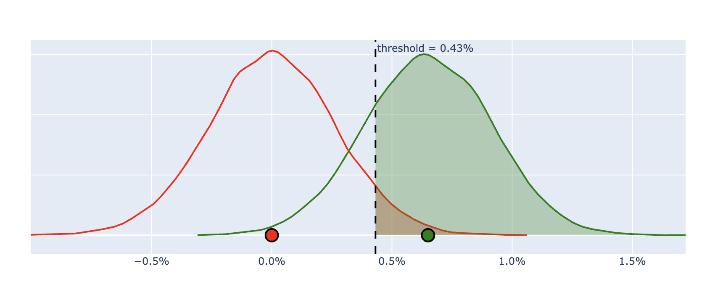

control_mean = 0.65The Winner’s Curse
Significance Testing is Not an Endorsement of the Treatment Effect
AB Testing
Bias
Bayesian
Effect Size
Statistical significance can reliably indicate that control and treatment are unlikely to be equal, but not that the observed effect size is accurate. Conditioning on significance systematically inflates effect sizes.

Introduction
This article is written for practitioners who run experiments and rely on statistical significance to make decisions about effect sizes.
Statistical significance can reliably indicate that control and treatment are unlikely to be equal, but not that the observed effect size is an accurate estimate of the true effect.
In other words, statistical significance is not an endorsement of the observed treatment effect. Below we show why conditioning on statistical significance systematically inflates effect sizes. We then quantify how often this happens and outline what to do when accuracy matters.
AB Test Setup
To prove our claim, we start by specifying a conventional, well-powered A/B test.
Baseline
Assume our baseline metric floats around 65%.
Significance Threshold
Use a traditional significance threshold of 0.05. If our test conditions are equal, 5% of the time we will incorrectly and falsely detect a signal (Type I Error).
alpha = 0.05Minimum Detectable Effect
Set MDE = 101 (index-to-control), representing a +1% relative lift, a typical effect size that product experiments in industry are powered to detect.
mde = 101
index_to_control_planned = mde / 100
delta_to_control_planned = control_mean*index_to_control_planned - control_meanNote: An MDE (index-to-control) of 101 corresponds to a +1% relative change — in this case increasing
baseline ratefrom 65% to 65.65% — a delta-to-control of 0.65%.
Statistical Power
Use a traditional statistical power of 0.80. If our MDE is true, our experiment has an 80% chance of detecting statistical significance. Our False Negative risk is 20% (Type II error).
power = 0.80These assumptions reflect a textbook, well-powered experiment.
Required Samples
Method to Calculate Required Samples
from math import ceil, sqrt
from scipy.stats import norm
def two_proportion_required_samples(
alpha,
power,
control_rate,
treatment_rate,
control_to_treatment_ratio=1,
tail_type="one_tail",
):
"""Calculate the required number of samples for two-proportion test.
:param float alpha: Value in (0,1) that specifies desired False Positive Rate
:param float power: Value in (0,1) that specifies desired 1 - False Negative Rate
:param float control_rate: Value in (0,1) that specifies expected control rate
:param float treatment_rate: Value in (0,1) that specifies expected treatment rate
:param float control_to_treatment_ratio: The ratio of control to treatment samples
:param string tail_type: Specifies one-tail or two-tail experiment\n
Defaults to "two_tail" if anything other than "one_tail" is given
:return: prob_tuple: Tuple of required control samples and treatment samples
:rtype: tuple
"""
alpha_adjusted = (
alpha
if tail_type is None
or tail_type.lower() == "one_tail"
else alpha / 2
)
beta = 1 - power
##Determine how extreme z-score must be to reach statistically significant result
z_stat_critical = norm.ppf(1 - alpha_adjusted)
##Determine z-score of treatment - control that corresponds to a True Positive Rate (1-beta)
z_power_critical = norm.ppf(beta)
##Expected Difference between treatment and control
expected_delta = treatment_rate - control_rate
##control Allocation Rate
control_allocation = (
control_to_treatment_ratio
/ (control_to_treatment_ratio + 1)
)
##treatment Allocation Rate
treatment_allocation = 1 - control_allocation
##Calculate Variance of treatment Rate - control Rate
blended_p = (
treatment_rate * treatment_allocation
+ control_rate * control_allocation
)
blended_q = 1 - blended_p
variance_blended = (
blended_p
* blended_q
/ (
control_allocation
* treatment_allocation
)
)
##Total Samples Required
total_samples_required = (
variance_blended
* (
(z_power_critical - z_stat_critical)
/ (0 - expected_delta)
)
** 2
)
##Split total samples into control and treatment
control_samples = ceil(
control_allocation
* total_samples_required
)
treatment_samples = ceil(
treatment_allocation
* total_samples_required
)
##Perhaps return required_delta in the future
required_delta = (
z_stat_critical * sqrt(variance_blended)
+ 0
)
return (control_samples, treatment_samples)(
control_required_samples,
treatment_required_samples,
) = two_proportion_required_samples(
alpha,
power,
control_mean,
control_mean * index_to_control_planned,
control_to_treatment_ratio=1,
tail_type="one_tail",
)control: 66,293
treatment: 66,293
Total: 132,586
Visualize Power
Null Distribution
Plot Null
import numpy as np
import plotly.graph_objects as go
from numpy.random import binomial, seed
import plotly.figure_factory as ff
seed(10)
NUMBER_SIMULATIONS = int(2e6)
control_simulation_samples_0 = (
binomial(
control_required_samples,
control_mean,
NUMBER_SIMULATIONS,
)
/ control_required_samples
)
control_simulation_samples_1 = (
binomial(
control_required_samples,
control_mean,
NUMBER_SIMULATIONS,
)
/ control_required_samples
)
null_simulations = (
control_simulation_samples_1
- control_simulation_samples_0
)
significance_threshold = np.percentile(null_simulations, 95)
fig = ff.create_distplot(
[null_simulations[:10000]],
group_labels=["Null Distribution"],
show_hist=False,
show_rug=False,
)
fig.data[0].fill = None # ensure no fill
fig.data[0].line.color = "red"
fig.data[0].line.width = 2
fig.data[0].showlegend = False
# Convert tuple traces to NumPy arrays so boolean masking works
x = np.asarray(fig.data[0].x, dtype=float)
y = np.asarray(fig.data[0].y, dtype=float)
# Right-tail mask
mask = x >= significance_threshold
if mask.any():
x_tail = x[mask]
y_tail = y[mask]
# Interpolate y at the exact threshold to make a clean polygon
y_thresh = np.interp(significance_threshold, x, y)
# Closed polygon for shaded area
poly_x = np.concatenate(
([significance_threshold], x_tail, [x_tail[-1], significance_threshold])
)
poly_y = np.concatenate(([y_thresh], y_tail, [0], [0]))
fig.add_trace(
go.Scatter(
x=poly_x,
y=poly_y,
hoverinfo = "skip",
fill="toself",
mode="lines",
showlegend = False,
fillcolor="rgba(255,0,0,0.3)",
name="<b>StatsSig</b>",
)
)
fig.add_trace(
go.Scatter(
hoverinfo="skip",
name="avg",
x=[np.mean(null_simulations)],
y=[0.000],
mode="markers",
marker_symbol="circle",
showlegend=False,
marker=dict(
color="red",
size=20,
line=dict(color="black", width=3),
),
)
)
# Vertical reference line
fig.add_vline(
x=significance_threshold,
line_dash="dash",
line_color="red",
annotation_text=f"{100*(1-alpha):.0f}th %ile Threshold = {significance_threshold:.2%}",
annotation_position="top right",
)
fig.update_layout(
xaxis_tickformat=".1%",
height = 400,
width = 600
)
fig.update_yaxes(showticklabels=False)
fig.data[0].hoverinfo = "skip"
fig.show()
null_fig = fig
The Null Distribution shows outcomes we expect to see if control and treatment are identical. Anything that falls beyond the 95th percentile at 0.43% is deemed Statistically Significant with a false positive rate of 5%.
Alternative Distribution
Plot Alternative
control_simulation_samples = (
binomial(
control_required_samples,
control_mean,
NUMBER_SIMULATIONS,
)
/ control_required_samples
)
treatment_simulation_samples = (
binomial(
treatment_required_samples,
control_mean * index_to_control_planned,
NUMBER_SIMULATIONS,
)
/ treatment_required_samples
)
alt_simulations = (
treatment_simulation_samples
- control_simulation_samples
)
observed_power = np.mean(np.where(alt_simulations > significance_threshold , 1 , 0))
fig = ff.create_distplot(
[alt_simulations[:10000]],
group_labels=["Alternative Distribution"],
show_hist=False,
show_rug=False,
)
fig.data[0].fill = None # ensure no fill
fig.data[0].line.color = "green"
fig.data[0].line.width = 2
fig.update_layout(xaxis_tickformat=".1%", showlegend=False)
fig.add_trace(
go.Scatter(
hoverinfo="skip",
name="avg",
x=[np.mean(alt_simulations)],
y=[0.000],
mode="markers",
marker_symbol="circle",
showlegend=False,
marker=dict(
color="green",
size=20,
line=dict(color="black", width=3),
),
)
)
alt_fig = fig
alt_fig.update_yaxes(showticklabels=False)
alt_fig.update_layout(
xaxis_tickformat=".1%",
height = 400,
width = 600
)
alt_fig.data[0].hoverinfo = "skip"
alt_fig
The Alternative Distribution shows outcomes we expect to see if Minimum Detectable Effect is present. The distribution is centered around 0.65% since we set MDE = 101.
Overlay Curves
statistical power = 79.9% — the share of Alternative Distribution that is expected to surpass our significance threshold.
With the experimental design fixed, we can now examine how conditioning on statistical significance affects observed effect sizes.
Winner’s Curse
Analyze Simulations
Among simulated experiments from our Alternative Distribution that are
statistically significant, what fraction of observed effects exceed the true effect (dtc) that was encoded into the simulations?
Let \(\widehat{\Delta}\) denote the observed delta-to-control in our experiment and \(\Delta_{\text{true}}\) denote the true delta-to-control.
\[ \Pr\!\left(\widehat{\Delta} > \Delta_{\text{true}} \mid \text{Statistical Significance}\right) \]
stats_sig = alt_simulations > significance_threshold
over_true_effect = alt_simulations > delta_to_control_planned
observed_power = np.mean(stats_sig)
pr_over_estimate_statssig = np.mean(over_true_effect[stats_sig])- 62.8% of our simulated experiments that reached Stats Sig overestimated the true delta-to-control we programmed into our simulations.
Rule of Thumb
\[ \Pr\!\left(\widehat{\Delta} > \Delta_{\text{true}} \mid \text{Statistical Significance}\right) \]
This probability can be understood by separating its two components:
Because the alternative distribution of the estimator is centered at the true delta-to-control, the observed delta-to-control is equally likely to fall above or below the true effect: \[ \Pr(\widehat{\Delta} > \Delta_{\text{true}}) = 0.5 \]
Because the true effect (delta-to-control = 0.65%) is present, the probability that the experiment reaches statistical significance is equal to the experiment’s statistical power: \[ \Pr(\text{Statistical Significance} \mid \Delta_{\text{true}}) = \text{Power} \]
Conditioning on statistical significance therefore yields:
\[ \Pr\!\left(\widehat{\Delta} > \Delta_{\text{true}} \mid \text{Statistical Significance}\right) = \frac{0.5}{\text{Power}} \]
\[ \Pr\!\left(\widehat{\Delta} > \Delta_{\text{true}} \mid \text{Statistical Significance}\right) = \frac{0.5}{\text{0.80}} = \text{62.5\%} \]
This closely matches our simulation results, where 62.8% of statistically significant experiments overestimated the true effect — delta-to-control = 0.65%.
The next section considers what this bias implies for practitioners.
What To Do
Effect size inflation is unavoidable in low-powered experiments. Practitioners have two options: increase statistical power to reduce the magnitude of the bias, or use priors to produce more stable effect size estimates across repeated experiments.
Option 1: Increase Power
If you can afford to acquire more samples, increase your statistical power to reduce the chance of effect size inflation. But the problem of over-estimates never vanishes.
Until an experiment reaches 50% power, statistically significant results are guaranteed to overestimate the true effect.
At 100% power, the minimum achievable overestimation rate is 50%.
Option 2: Use Priors
If accurate effect size estimates are the goal, using prior information becomes necessary.
Prior beliefs are weighed against observed results using precision-weighted averaging, so noisier experimental estimates are shrunk more aggressively toward historical baselines.
Method to Regularize Estimates
import numpy as np
def combine_prior_and_likelihood(
prior_mean,
prior_se,
likelihood_mean,
likelihood_se,
):
"""
Combines a normal prior and a normal likelihood into a normal posterior
using precision-weighted averaging.
All inputs may be scalars or NumPy arrays (broadcastable to the same shape).
"""
prior_mean = np.asarray(prior_mean)
prior_se = np.asarray(prior_se)
likelihood_mean = np.asarray(likelihood_mean)
likelihood_se = np.asarray(likelihood_se)
posterior_variance = 1 / (
1 / prior_se**2 + 1 / likelihood_se**2
)
posterior_mean = posterior_variance * (
prior_mean / prior_se**2
+ likelihood_mean / likelihood_se**2
)
posterior_se = np.sqrt(posterior_variance)
return posterior_mean, posterior_seExample
Below are simulated experiment data where the true control and treatment conversion rate are hard-coded — 65% for control and 66% for treatment.
Code
import numpy as np
import pandas as pd
from IPython.display import display
from scipy import stats
intuit_blue = "#0177c9"
intuit_red = "#bd0707"
TRIALS = int(5e4)
np.random.seed(211)
control_RATE = 0.65
treatment_RATE = 0.66
df_agg = (
pd.DataFrame(
{
"A": np.random.binomial(
TRIALS, control_RATE, 1
),
"B": np.random.binomial(
TRIALS, treatment_RATE, 1
),
}
)
.melt(
var_name="recipe", value_name="Conversions"
)
.assign(
trials=TRIALS,
rate=lambda x: x["Conversions"]
/ x["trials"],
)
)
df_agg["Rate"] = [
"{:.2%}".format(c) for c in df_agg["rate"]
]
df_agg["Trials"] = [
"{:,d}".format(int(c))
for c in df_agg["trials"]
]
df_agg["Conversions"] = [
"{:,d}".format(int(c))
for c in df_agg["Conversions"]
]
control_rate = df_agg.iloc[0]["rate"]
treatment_rate = df_agg.iloc[1]["rate"]
delta = treatment_rate - control_rate
n_c = float(df_agg.iloc[0]["trials"])
n_t = float(df_agg.iloc[1]["trials"])
index_to_control = float(treatment_rate) / float(
control_rate
)
delta_to_control = float(treatment_rate) - float(
control_rate
)
delta_to_control_string = "{:.2%}".format(
delta_to_control
)
se_delta = np.sqrt(
control_rate * (1 - control_rate) / n_c
+ treatment_rate * (1 - treatment_rate) / n_t
)
# z-score
z = delta / se_delta
p_value = stats.norm.sf(np.abs(z))| Trials | Conversions | Rate | |
|---|---|---|---|
| recipe | |||
| A | 50,000 | 32,209 | 64.42% |
| B | 50,000 | 33,241 | 66.48% |
In this simulation, control underpeformed and treatment outperformed their true averages; causing an inflated estimate of 2.06% and p-value = 0.000000000003338.
Regularization
In practice, regularization means shrinking experimental results toward historical averages rather than taking each statistically significant result at face value.
plotting function code
import numpy as np
import plotly.graph_objects as go
from scipy.stats import norm
def plot_distributions_cdf_only(
prior_mean,
prior_se,
like_mean,
like_se,
post_mean,
post_se,
metric_name,
num_points=400,
):
# Build x-range
all_means = np.array(
[prior_mean, like_mean, post_mean]
)
all_ses = np.array(
[prior_se, like_se, post_se]
)
xmin = all_means.min() - 4 * all_ses.max()
xmax = all_means.max() + 4 * all_ses.max()
x = np.linspace(xmin, xmax, num_points)
# Compute CDFs
prior_cdf = norm.cdf(x, prior_mean, prior_se)
like_cdf = norm.cdf(x, like_mean, like_se)
post_cdf = norm.cdf(x, post_mean, post_se)
# Compute PDFs (for plotting)
prior_pdf = norm.pdf(x, prior_mean, prior_se)
like_pdf = norm.pdf(x, like_mean, like_se)
post_pdf = norm.pdf(x, post_mean, post_se)
fig = go.Figure()
# Posterior (blue shaded — updated)
fig.add_trace(
go.Scatter(
x=x,
y=post_pdf,
mode="lines",
line=dict(
color="#0B3C5D", width=3
),
fill="tozeroy",
fillcolor="rgba(25, 100, 160, 0.35)",
name="Posterior",
customdata=post_cdf,
hovertemplate="<b>Posterior</b><br>x = %{x:.2%}<br>P(X < x) = %{customdata:.2%}<br>",
)
)
# Observed (orange)
fig.add_trace(
go.Scatter(
x=x,
y=like_pdf,
mode="lines",
line=dict(color="#E38B29", width=2),
name="Observed",
customdata=like_cdf,
hovertemplate="<b>Observed</b><br>x = %{x:.2%}<br>P(X < x) = %{customdata:.2%}<br>",
)
)
# Prior (dashed gray)
fig.add_trace(
go.Scatter(
x=x,
y=prior_pdf,
mode="lines",
line=dict(
color="#676767",
dash="dash",
width=2,
),
name="Prior",
customdata=prior_cdf,
hovertemplate="<b>Prior</b><br>x = %{x:.2%}<br>P(X < x) = %{customdata:.2%}<br>",
)
)
# Vertical "No Change" line
fig.add_shape(
type="line",
x0=0,
x1=0,
y0=0,
y1=max(post_pdf) * 1.1,
line=dict(color="black", width=3),
)
fig.add_annotation(
x=0,
y=max(post_pdf) * 1.15,
text="No Change",
showarrow=False,
font=dict(size=16),
)
fig.update_layout(
title=f"{metric_name}",
xaxis=dict(
title="Rate",
tickformat=".2%",
showgrid=True,
),
yaxis=dict(
showticklabels=False, showgrid=False
),
template="simple_white",
hovermode="closest",
)
fig.show()Plot Output
prior_mean = 0
prior_se = 0.0025
(
posterior_mean,
posterior_se,
) = combine_prior_and_likelihood(
prior_mean, prior_se, delta, se_delta
)
plot_distributions_cdf_only(
prior_mean=prior_mean,
prior_se=prior_se,
like_mean=delta,
like_se=se_delta,
post_mean=posterior_mean,
post_se=posterior_se,
metric_name="Conversions",
)The posterior estimate is a precision-weighted average of the prior and the observed experimental result, shrinking noisier estimates more aggressively toward historical baselines.
Conclusion
As shown above, statistical significance conditions on extreme results, biasing reported effect sizes upward — the Winner’s Curse.
Even a properly designed experiment with 80% statistical power, a statistically significant result is more likely to overestimate than underestimate the true delta-to-control — 62.5% of the time.
In short: Statistical significance reliably tells us when an effect exists, not how large it is — estimating magnitude requires more than hypothesis testing alone.